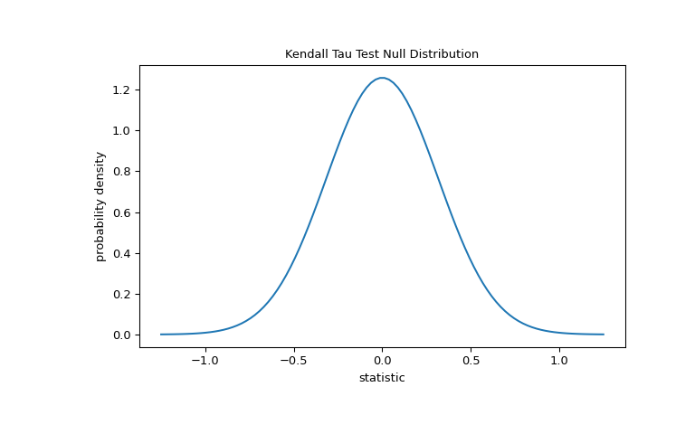
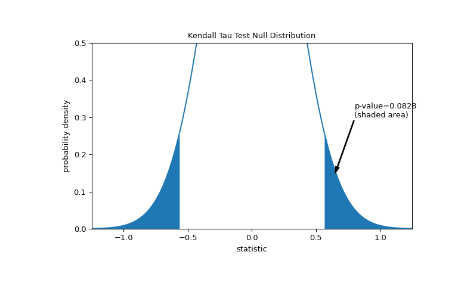
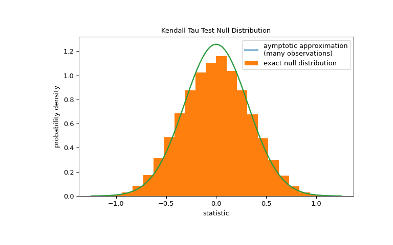

scipy.stats.kendalltau#
- scipy.stats.kendalltau(x, y, *, initial_lexsort=<object object>, nan_policy='propagate', method='auto', variant='b', alternative='two-sided')[source]#
Calculate Kendall’s tau, a correlation measure for ordinal data.
Kendall’s tau is a measure of the correspondence between two rankings. Values close to 1 indicate strong agreement, and values close to -1 indicate strong disagreement. This implements two variants of Kendall’s tau: tau-b (the default) and tau-c (also known as Stuart’s tau-c). These differ only in how they are normalized to lie within the range -1 to 1; the hypothesis tests (their p-values) are identical. Kendall’s original tau-a is not implemented separately because both tau-b and tau-c reduce to tau-a in the absence of ties.
- Parameters:
- x, yarray_like
Arrays of rankings, of the same shape. If arrays are not 1-D, they will be flattened to 1-D.
- initial_lexsortbool, optional, deprecated
This argument is unused.
Deprecated since version 1.10.0:
kendalltaukeyword argument initial_lexsort is deprecated as it is unused and will be removed in SciPy 1.14.0.- nan_policy{‘propagate’, ‘raise’, ‘omit’}, optional
Defines how to handle when input contains nan. The following options are available (default is ‘propagate’):
‘propagate’: returns nan
‘raise’: throws an error
‘omit’: performs the calculations ignoring nan values
- method{‘auto’, ‘asymptotic’, ‘exact’}, optional
Defines which method is used to calculate the p-value [5]. The following options are available (default is ‘auto’):
‘auto’: selects the appropriate method based on a trade-off between speed and accuracy
‘asymptotic’: uses a normal approximation valid for large samples
‘exact’: computes the exact p-value, but can only be used if no ties are present. As the sample size increases, the ‘exact’ computation time may grow and the result may lose some precision.
- variant{‘b’, ‘c’}, optional
Defines which variant of Kendall’s tau is returned. Default is ‘b’.
- alternative{‘two-sided’, ‘less’, ‘greater’}, optional
Defines the alternative hypothesis. Default is ‘two-sided’. The following options are available:
‘two-sided’: the rank correlation is nonzero
‘less’: the rank correlation is negative (less than zero)
‘greater’: the rank correlation is positive (greater than zero)
- Returns:
- resSignificanceResult
An object containing attributes:
- statisticfloat
The tau statistic.
- pvaluefloat
The p-value for a hypothesis test whose null hypothesis is an absence of association, tau = 0.
See also
spearmanrCalculates a Spearman rank-order correlation coefficient.
theilslopesComputes the Theil-Sen estimator for a set of points (x, y).
weightedtauComputes a weighted version of Kendall’s tau.
Notes
The definition of Kendall’s tau that is used is [2]:
tau_b = (P - Q) / sqrt((P + Q + T) * (P + Q + U)) tau_c = 2 (P - Q) / (n**2 * (m - 1) / m)
where P is the number of concordant pairs, Q the number of discordant pairs, T the number of ties only in x, and U the number of ties only in y. If a tie occurs for the same pair in both x and y, it is not added to either T or U. n is the total number of samples, and m is the number of unique values in either x or y, whichever is smaller.
References
[1]Maurice G. Kendall, “A New Measure of Rank Correlation”, Biometrika Vol. 30, No. 1/2, pp. 81-93, 1938.
[2]Maurice G. Kendall, “The treatment of ties in ranking problems”, Biometrika Vol. 33, No. 3, pp. 239-251. 1945.
[3]Gottfried E. Noether, “Elements of Nonparametric Statistics”, John Wiley & Sons, 1967.
[4]Peter M. Fenwick, “A new data structure for cumulative frequency tables”, Software: Practice and Experience, Vol. 24, No. 3, pp. 327-336, 1994.
[5]Maurice G. Kendall, “Rank Correlation Methods” (4th Edition), Charles Griffin & Co., 1970.
[6]Kershenobich, D., Fierro, F. J., & Rojkind, M. (1970). The relationship between the free pool of proline and collagen content in human liver cirrhosis. The Journal of Clinical Investigation, 49(12), 2246-2249.
[7]Hollander, M., Wolfe, D. A., & Chicken, E. (2013). Nonparametric statistical methods. John Wiley & Sons.
[8]B. Phipson and G. K. Smyth. “Permutation P-values Should Never Be Zero: Calculating Exact P-values When Permutations Are Randomly Drawn.” Statistical Applications in Genetics and Molecular Biology 9.1 (2010).
Examples
Consider the following data from [6], which studied the relationship between free proline (an amino acid) and total collagen (a protein often found in connective tissue) in unhealthy human livers.
The
xandyarrays below record measurements of the two compounds. The observations are paired: each free proline measurement was taken from the same liver as the total collagen measurement at the same index.>>> import numpy as np >>> # total collagen (mg/g dry weight of liver) >>> x = np.array([7.1, 7.1, 7.2, 8.3, 9.4, 10.5, 11.4]) >>> # free proline (μ mole/g dry weight of liver) >>> y = np.array([2.8, 2.9, 2.8, 2.6, 3.5, 4.6, 5.0])
These data were analyzed in [7] using Spearman’s correlation coefficient, a statistic similar to to Kendall’s tau in that it is also sensitive to ordinal correlation between the samples. Let’s perform an analogous study using Kendall’s tau.
>>> from scipy import stats >>> res = stats.kendalltau(x, y) >>> res.statistic 0.5499999999999999
The value of this statistic tends to be high (close to 1) for samples with a strongly positive ordinal correlation, low (close to -1) for samples with a strongly negative ordinal correlation, and small in magnitude (close to zero) for samples with weak ordinal correlation.
The test is performed by comparing the observed value of the statistic against the null distribution: the distribution of statistic values derived under the null hypothesis that total collagen and free proline measurements are independent.
For this test, the null distribution for large samples without ties is approximated as the normal distribution with variance
(2*(2*n + 5))/(9*n*(n - 1)), wheren = len(x).>>> import matplotlib.pyplot as plt >>> n = len(x) # len(x) == len(y) >>> var = (2*(2*n + 5))/(9*n*(n - 1)) >>> dist = stats.norm(scale=np.sqrt(var)) >>> z_vals = np.linspace(-1.25, 1.25, 100) >>> pdf = dist.pdf(z_vals) >>> fig, ax = plt.subplots(figsize=(8, 5)) >>> def plot(ax): # we'll reuse this ... ax.plot(z_vals, pdf) ... ax.set_title("Kendall Tau Test Null Distribution") ... ax.set_xlabel("statistic") ... ax.set_ylabel("probability density") >>> plot(ax) >>> plt.show()

The comparison is quantified by the p-value: the proportion of values in the null distribution as extreme or more extreme than the observed value of the statistic. In a two-sided test in which the statistic is positive, elements of the null distribution greater than the transformed statistic and elements of the null distribution less than the negative of the observed statistic are both considered “more extreme”.
>>> fig, ax = plt.subplots(figsize=(8, 5)) >>> plot(ax) >>> pvalue = dist.cdf(-res.statistic) + dist.sf(res.statistic) >>> annotation = (f'p-value={pvalue:.4f}\n(shaded area)') >>> props = dict(facecolor='black', width=1, headwidth=5, headlength=8) >>> _ = ax.annotate(annotation, (0.65, 0.15), (0.8, 0.3), arrowprops=props) >>> i = z_vals >= res.statistic >>> ax.fill_between(z_vals[i], y1=0, y2=pdf[i], color='C0') >>> i = z_vals <= -res.statistic >>> ax.fill_between(z_vals[i], y1=0, y2=pdf[i], color='C0') >>> ax.set_xlim(-1.25, 1.25) >>> ax.set_ylim(0, 0.5) >>> plt.show()

>>> res.pvalue 0.09108705741631495 # approximate p-value
Note that there is slight disagreement between the shaded area of the curve and the p-value returned by
kendalltau. This is because our data has ties, and we have neglected a tie correction to the null distribution variance thatkendalltauperforms. For samples without ties, the shaded areas of our plot and p-value returned bykendalltauwould match exactly.If the p-value is “small” - that is, if there is a low probability of sampling data from independent distributions that produces such an extreme value of the statistic - this may be taken as evidence against the null hypothesis in favor of the alternative: the distribution of total collagen and free proline are not independent. Note that:
The inverse is not true; that is, the test is not used to provide evidence for the null hypothesis.
The threshold for values that will be considered “small” is a choice that should be made before the data is analyzed [8] with consideration of the risks of both false positives (incorrectly rejecting the null hypothesis) and false negatives (failure to reject a false null hypothesis).
Small p-values are not evidence for a large effect; rather, they can only provide evidence for a “significant” effect, meaning that they are unlikely to have occurred under the null hypothesis.
For samples without ties of moderate size,
kendalltaucan compute the p-value exactly. However, in the presence of ties,kendalltauresorts to an asymptotic approximation. Nonetheles, we can use a permutation test to compute the null distribution exactly: Under the null hypothesis that total collagen and free proline are independent, each of the free proline measurements were equally likely to have been observed with any of the total collagen measurements. Therefore, we can form an exact null distribution by calculating the statistic under each possible pairing of elements betweenxandy.>>> def statistic(x): # explore all possible pairings by permuting `x` ... return stats.kendalltau(x, y).statistic # ignore pvalue >>> ref = stats.permutation_test((x,), statistic, ... permutation_type='pairings') >>> fig, ax = plt.subplots(figsize=(8, 5)) >>> plot(ax) >>> bins = np.linspace(-1.25, 1.25, 25) >>> ax.hist(ref.null_distribution, bins=bins, density=True) >>> ax.legend(['aymptotic approximation\n(many observations)', ... 'exact null distribution']) >>> plot(ax) >>> plt.show()

>>> ref.pvalue 0.12222222222222222 # exact p-value
Note that there is significant disagreement between the exact p-value calculated here and the approximation returned by
kendalltauabove. For small samples with ties, consider performing a permutation test for more accurate results.